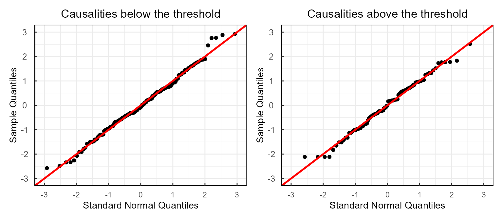
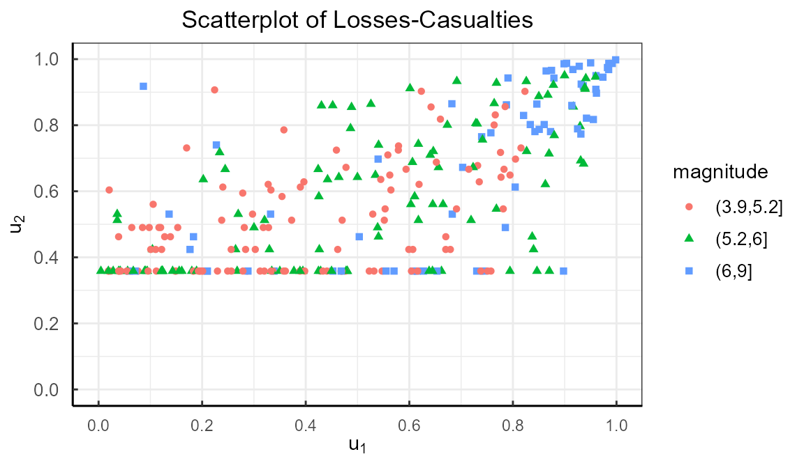

marginal-distribution-earthquake.Rmd
library(rMGLReg)
library(data.table)
dtnew <- data.table(earthqCHI)
y <- dtnew$y1
Xsigma <- model.matrix(~1, data = dtnew)
Xb <- model.matrix(~1, data = dtnew)
LLlogmoyalGA3 <- function(y, pars, Xsigma, Xb) {
sigma <- exp(Xsigma %*% pars[1:dim(Xsigma)[2]])
b <- exp(Xb %*% pars[(dim(Xsigma)[2] + 1):(dim(Xsigma)[2] + dim(Xb)[2])])
a <- exp(pars[dim(Xsigma)[2] + dim(Xb)[2] + 1])
ll <- -0.5 * log(2 * pi) - log(sigma) + a * log(b) + lgamma(a + 0.5) - lgamma(a) - (1 / (2 * sigma) + 1) * log(y) - (a + 0.5) * log(0.5 * (1 / y)^(1 / sigma) + b)
loglike <- -sum(ll)
return(loglike)
}
mlogmoyalGA3 <- optim(
fn = LLlogmoyalGA3, Xsigma = Xsigma,
Xb = Xb,
y = y, hessian = T,
control = list(maxit = 50000),
par = c(-1, -1, -1)
)
pars <- mlogmoyalGA3$par
sigma <- exp(Xsigma %*% pars[1:dim(Xsigma)[2]])
b <- exp(Xb %*% pars[(dim(Xsigma)[2] + 1):(dim(Xsigma)[2] + dim(Xb)[2])])
a <- exp(pars[dim(Xsigma)[2] + dim(Xb)[2] + 1])
ufit <- c()
for (i in 1:length(y)) {
ufit[i] <- pGLMGA(y[i], sigma = sigma[i], a = a, b = b[i])
}
resLMGA3 <- qnorm(ufit)
u1 <- ufit
f1 <- c()
for (i in 1:length(y)) {
f1[i] <- dGLMGA(y[i], sigma = sigma[i], a = a, b = b[i])
}
library(gamlss)
library(gamlss.tr)
library(evd)
library(extRemes)
library(ggplot2)
library(qqplotr)
library(patchwork)
umin <- 20
gen.trun(par = umin + 1, type = "right", name = "tr", family = "NBI")
#> A truncated family of distributions from NBI has been generated
#> and saved under the names:
#> dNBItr pNBItr qNBItr rNBItr NBItr
#> The type of truncation is right
#> and the truncation parameter is 21
dt2 <- dtnew[y2 <= umin]
m.NB <- gamlss(y2 ~ 1, family = NBItr, data = dt2, method = mixed(2, 10000))
#> GAMLSS-RS iteration 1: Global Deviance = 762.6964
#> GAMLSS-RS iteration 2: Global Deviance = 756.5612
#> GAMLSS-CG iteration 1: Global Deviance = 756.5118
#> GAMLSS-CG iteration 2: Global Deviance = 756.4672
#> GAMLSS-CG iteration 3: Global Deviance = 756.4263
#> GAMLSS-CG iteration 4: Global Deviance = 756.3886
#> GAMLSS-CG iteration 5: Global Deviance = 756.3538
#> GAMLSS-CG iteration 6: Global Deviance = 756.3215
#> GAMLSS-CG iteration 7: Global Deviance = 756.2915
#> GAMLSS-CG iteration 8: Global Deviance = 756.2635
#> GAMLSS-CG iteration 9: Global Deviance = 756.2373
#> GAMLSS-CG iteration 10: Global Deviance = 756.2127
#> GAMLSS-CG iteration 11: Global Deviance = 756.1897
#> GAMLSS-CG iteration 12: Global Deviance = 756.1679
#> GAMLSS-CG iteration 13: Global Deviance = 756.1474
#> GAMLSS-CG iteration 14: Global Deviance = 756.1281
#> GAMLSS-CG iteration 15: Global Deviance = 756.1097
#> GAMLSS-CG iteration 16: Global Deviance = 756.0923
#> GAMLSS-CG iteration 17: Global Deviance = 756.0758
#> GAMLSS-CG iteration 18: Global Deviance = 756.0601
#> GAMLSS-CG iteration 19: Global Deviance = 756.0451
#> GAMLSS-CG iteration 20: Global Deviance = 756.0309
#> GAMLSS-CG iteration 21: Global Deviance = 756.0172
#> GAMLSS-CG iteration 22: Global Deviance = 756.0042
#> GAMLSS-CG iteration 23: Global Deviance = 755.9917
#> GAMLSS-CG iteration 24: Global Deviance = 755.9798
#> GAMLSS-CG iteration 25: Global Deviance = 755.9684
#> GAMLSS-CG iteration 26: Global Deviance = 755.9574
#> GAMLSS-CG iteration 27: Global Deviance = 755.9468
#> GAMLSS-CG iteration 28: Global Deviance = 755.9366
#> GAMLSS-CG iteration 29: Global Deviance = 755.9269
#> GAMLSS-CG iteration 30: Global Deviance = 755.9175
#> GAMLSS-CG iteration 31: Global Deviance = 755.9084
#> GAMLSS-CG iteration 32: Global Deviance = 755.8996
#> GAMLSS-CG iteration 33: Global Deviance = 755.8912
#> GAMLSS-CG iteration 34: Global Deviance = 755.883
#> GAMLSS-CG iteration 35: Global Deviance = 755.8751
#> GAMLSS-CG iteration 36: Global Deviance = 755.8675
#> GAMLSS-CG iteration 37: Global Deviance = 755.8601
#> GAMLSS-CG iteration 38: Global Deviance = 755.8529
#> GAMLSS-CG iteration 39: Global Deviance = 755.846
#> GAMLSS-CG iteration 40: Global Deviance = 755.8393
#> GAMLSS-CG iteration 41: Global Deviance = 755.8328
#> GAMLSS-CG iteration 42: Global Deviance = 755.8264
#> GAMLSS-CG iteration 43: Global Deviance = 755.8203
#> GAMLSS-CG iteration 44: Global Deviance = 755.8143
#> GAMLSS-CG iteration 45: Global Deviance = 755.8085
#> GAMLSS-CG iteration 46: Global Deviance = 755.8029
#> GAMLSS-CG iteration 47: Global Deviance = 755.7974
#> GAMLSS-CG iteration 48: Global Deviance = 755.792
#> GAMLSS-CG iteration 49: Global Deviance = 755.7868
#> GAMLSS-CG iteration 50: Global Deviance = 755.7818
#> GAMLSS-CG iteration 51: Global Deviance = 755.7768
#> GAMLSS-CG iteration 52: Global Deviance = 755.772
#> GAMLSS-CG iteration 53: Global Deviance = 755.7673
#> GAMLSS-CG iteration 54: Global Deviance = 755.7628
#> GAMLSS-CG iteration 55: Global Deviance = 755.7583
#> GAMLSS-CG iteration 56: Global Deviance = 755.7539
#> GAMLSS-CG iteration 57: Global Deviance = 755.7497
#> GAMLSS-CG iteration 58: Global Deviance = 755.7455
#> GAMLSS-CG iteration 59: Global Deviance = 755.7415
#> GAMLSS-CG iteration 60: Global Deviance = 755.7375
#> GAMLSS-CG iteration 61: Global Deviance = 755.7336
#> GAMLSS-CG iteration 62: Global Deviance = 755.7298
#> GAMLSS-CG iteration 63: Global Deviance = 755.7261
#> GAMLSS-CG iteration 64: Global Deviance = 755.7225
#> GAMLSS-CG iteration 65: Global Deviance = 755.7189
#> GAMLSS-CG iteration 66: Global Deviance = 755.7154
#> GAMLSS-CG iteration 67: Global Deviance = 755.712
#> GAMLSS-CG iteration 68: Global Deviance = 755.7087
#> GAMLSS-CG iteration 69: Global Deviance = 755.7054
#> GAMLSS-CG iteration 70: Global Deviance = 755.7022
#> GAMLSS-CG iteration 71: Global Deviance = 755.6991
#> GAMLSS-CG iteration 72: Global Deviance = 755.696
#> GAMLSS-CG iteration 73: Global Deviance = 755.693
#> GAMLSS-CG iteration 74: Global Deviance = 755.69
#> GAMLSS-CG iteration 75: Global Deviance = 755.6871
#> GAMLSS-CG iteration 76: Global Deviance = 755.6843
#> GAMLSS-CG iteration 77: Global Deviance = 755.6815
#> GAMLSS-CG iteration 78: Global Deviance = 755.6787
#> GAMLSS-CG iteration 79: Global Deviance = 755.6761
#> GAMLSS-CG iteration 80: Global Deviance = 755.6734
#> GAMLSS-CG iteration 81: Global Deviance = 755.6708
#> GAMLSS-CG iteration 82: Global Deviance = 755.6683
#> GAMLSS-CG iteration 83: Global Deviance = 755.6658
#> GAMLSS-CG iteration 84: Global Deviance = 755.6633
#> GAMLSS-CG iteration 85: Global Deviance = 755.6609
#> GAMLSS-CG iteration 86: Global Deviance = 755.6585
#> GAMLSS-CG iteration 87: Global Deviance = 755.6561
#> GAMLSS-CG iteration 88: Global Deviance = 755.6538
#> GAMLSS-CG iteration 89: Global Deviance = 755.6516
#> GAMLSS-CG iteration 90: Global Deviance = 755.6494
#> GAMLSS-CG iteration 91: Global Deviance = 755.6472
#> GAMLSS-CG iteration 92: Global Deviance = 755.645
#> GAMLSS-CG iteration 93: Global Deviance = 755.6429
#> GAMLSS-CG iteration 94: Global Deviance = 755.6408
#> GAMLSS-CG iteration 95: Global Deviance = 755.6388
#> GAMLSS-CG iteration 96: Global Deviance = 755.6367
#> GAMLSS-CG iteration 97: Global Deviance = 755.6347
#> GAMLSS-CG iteration 98: Global Deviance = 755.6328
#> GAMLSS-CG iteration 99: Global Deviance = 755.6308
#> GAMLSS-CG iteration 100: Global Deviance = 755.6289
#> GAMLSS-CG iteration 101: Global Deviance = 755.6271
#> GAMLSS-CG iteration 102: Global Deviance = 755.6252
#> GAMLSS-CG iteration 103: Global Deviance = 755.6234
#> GAMLSS-CG iteration 104: Global Deviance = 755.6216
#> GAMLSS-CG iteration 105: Global Deviance = 755.6198
#> GAMLSS-CG iteration 106: Global Deviance = 755.6181
#> GAMLSS-CG iteration 107: Global Deviance = 755.6164
#> GAMLSS-CG iteration 108: Global Deviance = 755.6147
#> GAMLSS-CG iteration 109: Global Deviance = 755.613
#> GAMLSS-CG iteration 110: Global Deviance = 755.6114
#> GAMLSS-CG iteration 111: Global Deviance = 755.6097
#> GAMLSS-CG iteration 112: Global Deviance = 755.6081
#> GAMLSS-CG iteration 113: Global Deviance = 755.6066
#> GAMLSS-CG iteration 114: Global Deviance = 755.605
#> GAMLSS-CG iteration 115: Global Deviance = 755.6035
#> GAMLSS-CG iteration 116: Global Deviance = 755.602
#> GAMLSS-CG iteration 117: Global Deviance = 755.6005
#> GAMLSS-CG iteration 118: Global Deviance = 755.599
#> GAMLSS-CG iteration 119: Global Deviance = 755.5975
#> GAMLSS-CG iteration 120: Global Deviance = 755.5961
#> GAMLSS-CG iteration 121: Global Deviance = 755.5946
#> GAMLSS-CG iteration 122: Global Deviance = 755.5932
#> GAMLSS-CG iteration 123: Global Deviance = 755.5919
#> GAMLSS-CG iteration 124: Global Deviance = 755.5905
#> GAMLSS-CG iteration 125: Global Deviance = 755.5891
#> GAMLSS-CG iteration 126: Global Deviance = 755.5878
#> GAMLSS-CG iteration 127: Global Deviance = 755.5865
#> GAMLSS-CG iteration 128: Global Deviance = 755.5852
#> GAMLSS-CG iteration 129: Global Deviance = 755.5839
#> GAMLSS-CG iteration 130: Global Deviance = 755.5826
#> GAMLSS-CG iteration 131: Global Deviance = 755.5814
#> GAMLSS-CG iteration 132: Global Deviance = 755.5801
#> GAMLSS-CG iteration 133: Global Deviance = 755.5789
#> GAMLSS-CG iteration 134: Global Deviance = 755.5777
#> GAMLSS-CG iteration 135: Global Deviance = 755.5765
#> GAMLSS-CG iteration 136: Global Deviance = 755.5753
#> GAMLSS-CG iteration 137: Global Deviance = 755.5741
#> GAMLSS-CG iteration 138: Global Deviance = 755.5729
#> GAMLSS-CG iteration 139: Global Deviance = 755.5718
#> GAMLSS-CG iteration 140: Global Deviance = 755.5707
#> GAMLSS-CG iteration 141: Global Deviance = 755.5695
#> GAMLSS-CG iteration 142: Global Deviance = 755.5684
#> GAMLSS-CG iteration 143: Global Deviance = 755.5673
#> GAMLSS-CG iteration 144: Global Deviance = 755.5663
#> GAMLSS-CG iteration 145: Global Deviance = 755.5652
#> GAMLSS-CG iteration 146: Global Deviance = 755.5641
#> GAMLSS-CG iteration 147: Global Deviance = 755.5631
#> GAMLSS-CG iteration 148: Global Deviance = 755.562
#> GAMLSS-CG iteration 149: Global Deviance = 755.561
#> GAMLSS-CG iteration 150: Global Deviance = 755.56
#> GAMLSS-CG iteration 151: Global Deviance = 755.559
#> GAMLSS-CG iteration 152: Global Deviance = 755.558
summary(m.NB)
#> ******************************************************************
#> Family: c("NBItr", "right truncated Negative Binomial type I")
#>
#> Call: gamlss(formula = y2 ~ 1, family = NBItr, data = dt2,
#> method = mixed(2, 10000))
#>
#> Fitting method: mixed(2, 10000)
#>
#> ------------------------------------------------------------------
#> Mu link function: log
#> Mu Coefficients:
#> Estimate Std. Error t value Pr(>|t|)
#> (Intercept) 3.622 2.325 1.558 0.121
#>
#> ------------------------------------------------------------------
#> Sigma link function: log
#> Sigma Coefficients:
#> Estimate Std. Error t value Pr(>|t|)
#> (Intercept) 1.6957 0.1288 13.17 <2e-16 ***
#> ---
#> Signif. codes: 0 '***' 0.001 '**' 0.01 '*' 0.05 '.' 0.1 ' ' 1
#>
#> ------------------------------------------------------------------
#> No. of observations in the fit: 194
#> Degrees of Freedom for the fit: 2
#> Residual Deg. of Freedom: 192
#> at cycle: 152
#>
#> Global Deviance: 755.558
#> AIC: 759.558
#> SBC: 766.0937
#> ******************************************************************
pars <- c(coef(m.NB, what = "mu"), coef(m.NB, what = "sigma"))
summary1 <- summary(m.NB)
#> ******************************************************************
#> Family: c("NBItr", "right truncated Negative Binomial type I")
#>
#> Call: gamlss(formula = y2 ~ 1, family = NBItr, data = dt2,
#> method = mixed(2, 10000))
#>
#> Fitting method: mixed(2, 10000)
#>
#> ------------------------------------------------------------------
#> Mu link function: log
#> Mu Coefficients:
#> Estimate Std. Error t value Pr(>|t|)
#> (Intercept) 3.622 2.325 1.558 0.121
#>
#> ------------------------------------------------------------------
#> Sigma link function: log
#> Sigma Coefficients:
#> Estimate Std. Error t value Pr(>|t|)
#> (Intercept) 1.6957 0.1288 13.17 <2e-16 ***
#> ---
#> Signif. codes: 0 '***' 0.001 '**' 0.01 '*' 0.05 '.' 0.1 ' ' 1
#>
#> ------------------------------------------------------------------
#> No. of observations in the fit: 194
#> Degrees of Freedom for the fit: 2
#> Residual Deg. of Freedom: 192
#> at cycle: 152
#>
#> Global Deviance: 755.558
#> AIC: 759.558
#> SBC: 766.0937
#> ******************************************************************
mu.NB <- exp(coef(m.NB))
sigma.NB <- exp(coefficients(m.NB, what = "sigma"))
newtheme <- theme_bw() + theme(
axis.line = element_line(colour = "black"),
axis.text.x = element_text(margin = margin(t = 0.25, unit = "cm")),
axis.text.y = element_text(
margin = margin(r = 0.25, unit = "cm"),
size = 10,
vjust = 0.5,
hjust = 0.5
),
axis.ticks.length = unit(-0.1, "cm"),
plot.title = element_text(hjust = 0.5),
legend.direction = "vertical",
legend.position = c(.95, .99),
legend.justification = c("right", "top"),
legend.box.just = "right",
legend.text = element_text(size = 10)
)
res.death <- residuals(m.NB, what = "z-scores")
df <- data.table(y = res.death)
v1 <- ggplot(df, aes(sample = y)) +
stat_qq_point() +
stat_qq_line(col = "red", identity = TRUE) +
newtheme +
labs(title = "Causalities below the threshold", x = "Standard Normal Quantiles", y = "Sample Quantiles") +
scale_x_continuous(
limits = c(-3, 3),
breaks = seq(-3, 3, by = 1)
) +
scale_y_continuous(
limits = c(-3, 3),
breaks = seq(-3, 3, by = 1)
) +
geom_abline(slope = 1, col = "red", lwd = 1)
# =========================================================================
# death > umin
# ==========================================================================
X1 <- model.matrix(~1, data = dtnew[y2 > umin])
X2 <- model.matrix(~1, data = dtnew[y2 > umin])
y2new <- dtnew[y2 > umin]$y2
GPD.MLE <- fevd(
x = y2,
scale.fun = ~1,
shape.fun = ~1,
threshold = umin, method = "MLE", use.phi = F,
type = "GP", data = dtnew
)
GPD.MLE
#>
#> fevd(x = y2, data = dtnew, threshold = umin, scale.fun = ~1,
#> shape.fun = ~1, use.phi = F, type = "GP", method = "MLE")
#>
#> [1] "Estimation Method used: MLE"
#>
#>
#> Negative Log-Likelihood Value: 669.9007
#>
#>
#> Estimated parameters:
#> scale shape
#> 56.582290 1.874784
#>
#> Standard Error Estimates:
#> scale shape
#> 14.2629288 0.2984979
#>
#> Estimated parameter covariance matrix.
#> scale shape
#> scale 203.431139 -1.90079151
#> shape -1.900792 0.08910101
#>
#> AIC = 1343.801
#>
#> BIC = 1348.951
GPD.par <- GPD.MLE$results$par
pars <- GPD.MLE$results$par
GPD.hessian <- GPD.MLE$results$hessian
GPD.se <- sqrt(diag(solve(GPD.hessian)))
GPD.Z <- GPD.par / GPD.se ## Z缁熻???NAGPD.p <- ifelse(GPD.Z >= 0, pnorm(GPD.Z, lower = F) * 2, pnorm(GPD.Z) * 2) ## p???
cbind(GPD.par, GPD.se, GPD.p)
#> GPD.par GPD.se GPD.p
#> scale 56.582290 14.2629020 7.275393e-05
#> shape 1.874784 0.2984979 3.369967e-10
scale <- (X1 %*% pars[1:dim(X1)[2]])
shape <- X2 %*% pars[c((dim(X1)[2] + 1):(dim(X1)[2] + dim(X2)[2]))]
ufit <- 0
for (i in 1:length(y2new)) {
ufit[i] <- evd::pgpd(y2new[i], loc = umin, scale = scale[i], shape = shape[i])
}
resGPD.death <- qnorm(ufit)
df <- data.table(y = resGPD.death)
v2 <- ggplot(df, aes(sample = y)) +
stat_qq_point() +
stat_qq_line(col = "red", identity = TRUE) +
newtheme +
labs(title = "Causalities above the threshold", x = "Standard Normal Quantiles", y = "Sample Quantiles") +
scale_x_continuous(
limits = c(-3, 3),
breaks = seq(-3, 3, by = 1)
) +
scale_y_continuous(
limits = c(-3, 3),
breaks = seq(-3, 3, by = 1)
) +
geom_abline(slope = 1, col = "red", lwd = 1)
v0 <- v1 + v2 + plot_layout(ncol = 2)
v0
# ======================================================================================
# GPD and negative binom
y <- dtnew$y2
X0 <- model.matrix(~1, data = dtnew)
X1 <- model.matrix(~1, data = dtnew) # GP
X2 <- model.matrix(~1, data = dtnew) # GP
par1 <- GPD.MLE$results$par
par2 <- c(coef(m.NB, what = "mu"), coef(m.NB, what = "sigma"))
p1 <- nrow(dt2) / nrow(dtnew)
scale <- X1 %*% par1[1:dim(X1)[2]]
shape <- X2 %*% par1[c((dim(X1)[2] + 1):(dim(X1)[2] + dim(X2)[2]))]
dtu2 <- data.table(
mu = as.vector(exp(X0 %*% par2[1:dim(X0)[2]])),
sigma = exp(par2[length(par2)]),
scale = as.vector(X1 %*% par1[1:dim(X1)[2]]),
shape = as.vector(X2 %*% par1[c((dim(X1)[2] + 1):(dim(X1)[2] + dim(X2)[2]))]),
y = y, y_ = y - 1,
y__ = y - 2
)
dtu2[y_ < 0]$y_ <- 0
dtu2[y__ < 0]$y__ <- 0
u <- with(dtu2, {
u2 <- u2_ <- u2__ <- u0 <- 0
for (i in 1:length(y)) {
if (y[i] <= umin) {
u2[i] <- p1 * as.vector(pNBItr(y[i], mu = mu[i], sigma = sigma[i]))
} else {
u2[i] <- p1 + (1 - p1) * evd::pgpd(y[i], loc = umin, scale = scale[i], shape = shape[i])
}
if (y_[i] <= umin) {
u2_[i] <- p1 * as.vector(pNBItr(y_[i], mu = mu[i], sigma = sigma[i]))
} else {
u2_[i] <- p1 + (1 - p1) * evd::pgpd(y_[i], loc = umin, scale = scale[i], shape = shape[i])
}
if (y__[i] <= umin) {
u2__[i] <- p1 * as.vector(pNBItr(y__[i], mu = mu[i], sigma = sigma[i]))
} else {
u2__[i] <- p1 + (1 - p1) * evd::pgpd(y__[i], loc = umin, scale = scale[i], shape = shape[i])
}
u0 <- pNBItr(umin, mu = mu[i], sigma = sigma[i])
}
u <- cbind(u2, u2_, u2__, u0)
u
})
u2 <- u[, 1]
u2_ <- u[, 2]
u2__ <- u[, 3]
u2_[which(dtnew$y2 - 1 < 0)] <- 0
u2__[which(dtnew$y2 - 2 < 0)] <- 0
dtu2$u2 <- u2
dtu2$u2_ <- u2_
dtu2$u2__ <- u2__
# =========================================================================================
# density of y2 --------------------------------------------------------------------------
dtu2$f2 <- with(dtu2, {
f <- 0
for (i in 1:length(y)) {
if (y[i] <= umin) {
f[i] <- p1 * as.vector(dNBItr(y[i], mu = mu[i], sigma = sigma[i]))
} else {
f[i] <- (1 - p1) * evd::dgpd(y[i], loc = umin, scale = scale[i], shape = shape[i])
}
}
f
})
f2 <- dtu2$f2
dtnew$f1 <- f1
dtnew$f2 <- dtu2$f2
dtnew$u1 <- u1
dtnew$u2 <- dtu2$u2
dtnew$u2_ <- dtu2$u2_
dtnew[, magnitude.f := cut(magnitude, c(3.9, 5.2, 6, 9))]
dtnew[, .(corc = cor(u1, u2)), by = magnitude.f]
#> magnitude.f corc
#> 1: (6,9] 0.6865428
#> 2: (3.9,5.2] 0.4753195
#> 3: (5.2,6] 0.6362073
summary(dtnew$magnitude)
#> Min. 1st Qu. Median Mean 3rd Qu. Max.
#> 4.000 5.000 5.400 5.547 6.000 8.100
table(dtnew$magnitude.f)
#>
#> (3.9,5.2] (5.2,6] (6,9]
#> 123 103 65
library(latex2exp)
df <- dtnew
m1 <- ggplot(df, aes(
x = u1, y = u2, group = magnitude.f,
col = magnitude.f,
shape = magnitude.f
)) +
geom_point() +
theme_bw() +
theme(
axis.line = element_line(colour = "black"),
axis.text.x = element_text(margin = margin(t = 0.25, unit = "cm")),
axis.text.y = element_text(
margin = margin(r = 0.25, unit = "cm"),
size = 10,
vjust = 0.5,
hjust = 0.5
),
axis.ticks.length = unit(-0.1, "cm"),
plot.title = element_text(hjust = 0.5),
# legend.direction = 'vertical',
# legend.position = c(.95, .99),
# legend.justification = c("right", "top"),
# legend.box.just = "right",
legend.text = element_text(size = 10)
) +
labs(
title = "Scatterplot of Losses-Casualties",
x = TeX("$u_1$"),
y = TeX("$u_2$")
) +
# scale_colour_discrete(breaks = c(1,2,3)) +
scale_x_continuous(
limits = c(0, 1),
breaks = seq(0, 1, by = 0.2)
) +
scale_y_continuous(
limits = c(0, 1),
breaks = seq(0, 1, by = 0.2)
) +
labs(col = "magnitude", shape = "magnitude")
m1